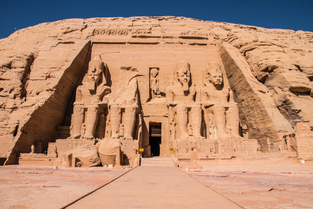
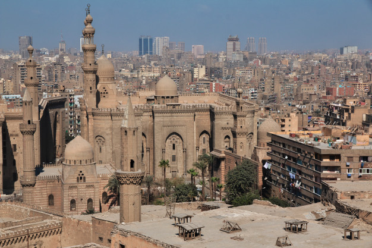
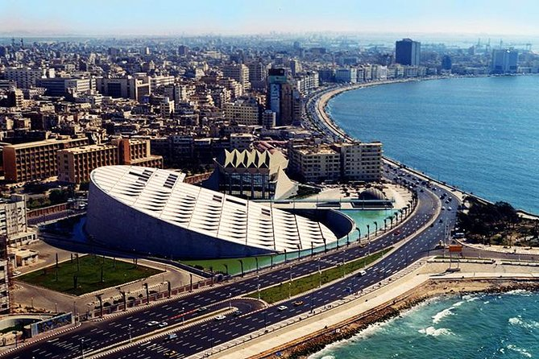

Aswan, a city on the Nile River, has been southern Egypt’s strategic and commercial gateway since antiquity.
It contains significant archaeological sites like the Philae temple complex, on
Agilkia Island near the landmark Aswan Dam.
Philae’s ruins include the columned Temple of Isis, dating to the 4th century B.C. Downriver,
Elephantine Island holds the Temple of Khnum, from the Third Dynasty.

Temple
Luxor
Luxor is a city on the east bank of the Nile River in southern Egypt.
It's on the site of ancient Thebes, the pharaohs’ capital at the height
of their power, during the 16th–11th centuries B.C. Today's city
surrounds 2 huge, surviving ancient monuments: graceful Luxor
Temple and Karnak Temple, a mile north. The royal tombs of the
Valley of the Kings and the Valley of the Queens are on the river’s
west bank
Louxor
Cairo
Cairo, Egypt’s sprawling capital, is set on the Nile River. At its heart is
Tahrir Square and the vast Egyptian Museum, a trove of
antiquities including royal mummies and gilded King Tutankhamun artifacts.
Nearby, Giza is the site of the iconic pyramids and Great Sphinx, dating to the 26th century BC.
In Gezira Island’s leafy Zamalek district, 187m Cairo Tower affords panoramic city views.

Old-Street
Alexandria
Alexandria is a Mediterranean port city in Egypt.
During the Hellenistic period, it was home to a lighthouse ranking among the Seven Wonders of the
Ancient World as well as a storied library.
Today the library is reincarnated in the disc-shaped,
ultramodern Bibliotheca Alexandrina. The city also has Greco-Roman landmarks, old-world cafes and sandy beaches. Its 15th-century seafront Qaitbay Citadel is now a museum.

Alexandria